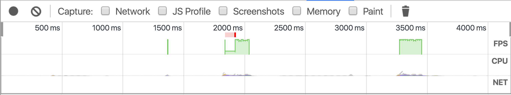
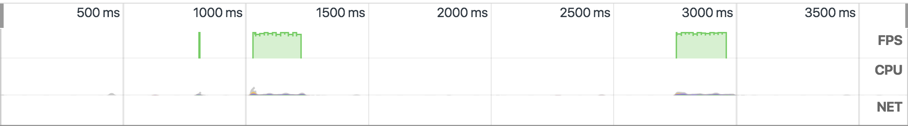

*Change above and record timeline to see below results
Using CSS Positions:
Changing position alters the geometry of the element. That means that it may affect the position or size of other elements on the page, both of which require the browser to perform layout operations.
Once those layout operations have completed any damaged pixels will need to be painted and the page must then be composited together.
Source: CSS TriggersResulted timeframe:
Using CSS Transform:
Changing transform does not trigger any geometry changes or painting, which is very good. This means that the operation can likely be carried out by the compositor thread with the help of the GPU.
Source: CSS TriggersResulted timeframe:
Read more: Thanks to Jose for writting a nice article
Reference:
DevTools Timeline